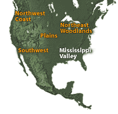
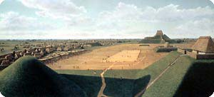
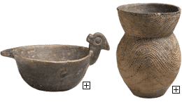
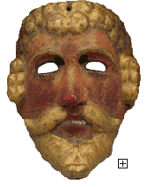

|

|
|

Central Cahokia circa AD 1150, by Lloyd K. Townsend. Courtesy Cahokia Mounds State Historic Site |
Cities of the Mound Builders
Huge earthen mounds positioned around a plaza characterized the cities that
flourished along the Mississippi River and its tributaries. On top of the mounds were
temples and homes of nobility. Commoners lived in thatched dwellings at ground
level. The whole complex was surrounded by wooden fortifications and outside the city
grew fields of corn. Although no one knows what the native people called themselves,
archaeologists refer to them as the
Mound Builders.
The largest of the mounds is near present East St. Louis in Illinois with a base of 200,000
square feet, larger than the pyramids of Egypt. Hundreds of smaller mounds exist, the
northernmost of which is near Red Wing, Minnesota.
|
| |

Clay Vessels,
Arkansas, Caddo, Mississippi Valley (United States) Arkansas or Oklahoma, Bowl & Vessel, 1250-1500, Ceramic, The Ethel Morrison Van Derlip Fund, 90.2.7 and 90.2.3
|
Artistic Production
Excavations of the various mounds have produced a storehouse of treasures made of clay,
shell, marble, and copper. Each region is noted for a particular style of production. For
example, sites in and around modern-day Arkansas produced elaborate pottery used in burials
as well as many other art objects.
|
| |

Maya Mask of a Spanish Conquistador,
19th century, wood, pigment, The Paul C. Johnson, Jr. Fund, The Minneapolis Institute
of Arts, 99.3.2 |
Contact
When Spanish explorers came north from present-day Mexico during the 16th century, they
encountered the Mound Builders of the Mississippi Valley. Unfortunately, the native people
were unable to survive the epidemic disease that followed and ultimately decimated the population.
Only the Natchez people survived and continued to build mounds along the lower Mississippi River
into the 17th century.
|